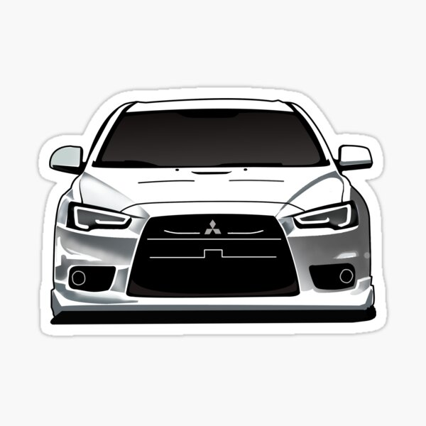

My name is Alex, and I am currently a senior majoring in CIS! This is my final full semester before I start my Capstone project in the fall. My goal is to land a job in a big city, preferably NYC. I've grown up in rural SC my entire life so I want a change of scenery.
Two of my main hobbies include collecting sneakers & cars! I currently own over 20 pairs of shoes and counting. I'm also into cars heavily and I even run my own car instgram page. I also like traveling a lot, I will be in NYC in two weeks and plan for South Korea after I graduate!

| Places I've been: | Places I want to go: |
|---|---|
| New York City | South Korea |
| Prague | Japan |
| Canada | Germany |